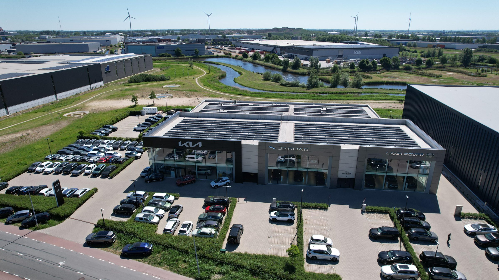

Steeds meer transportbedrijven en distributiecentra willen hun wagenpark elektrificeren, maar de netcapaciteit groeit niet mee. Uitbreidingen worden uitgesteld en energiekosten lopen op. Vibe Energy helpt logistieke bedrijven groeien binnen hun bestaande aansluiting.
Vrachtwagens, bestelbussen en heftrucks gaan op stroom. Wetgeving versnelt — zero-emissiezones, EU-CO₂-normen — maar uw aansluiting staat nog op het niveau van toen de hal werd gebouwd.
Vanaf 2025 laten 30+ steden alleen nog emissieloze bestel- en vrachtwagens binnen. Geen e-vloot = geen toegang tot uw klanten.
2025 · ZE-zones actiefOp een industrieterrein met netcongestie krijgt u jaren wachttijd — of een afwijzing. Ondertussen lopen leasecontracten af.
12–36 mnd wachttijdStroom is na lease de grootste kostenpost van een e-trekker. Piektoeslagen en imbalans drukken op de vrachtprijs per kilometer.
+30% energiekosten · 2022→2025Dock-bewegingen, e-trekkers, heftrucks en koeling vragen tegelijk vermogen — de aansluiting wordt het knelpunt.
Gelijktijdige piekvraagDe laadbehoefte groeit elke paar jaar. Een aansluiting die vandaag volstaat, is morgen te krap.
2× vraag · elke 3 jaarKoel- en vrieshuizen draaien continu met grote piekvraag op compressors — bovenop het laden.
24/7 basislastGeplande e-trekkers en bestelbussen kunnen niet laden — elektrificatie loopt vast op vermogen.
Zonder emissieloze vloot geen toegang tot zero-emissiezones — en dus tot uw stedelijke klanten.
Ongestuurd laden stapelt pieken en jaagt het capaciteitstarief en de TCO per kilometer omhoog.
Capaciteit achter de meter — laden en groeien zonder te wachten op het net.
Meer →Laden bij dal-tarief, leveren bij dock-piek — opslag vergroot uw laadcapaciteit.
Meer →Voorspelt dock-aankomsten, verdeelt vermogen en houdt CO₂-bewijslast bij — 24/7.
Meer →Meerdere panden of een DC-portefeuille als één gedeeld capaciteitssysteem.
Meer →Meer laadpunten voor trekkers, bussen en heftrucks binnen dezelfde aansluiting.
dynamische load balancingLaden bij dal-tarief, pieken afgevlakt, eigen opwek maximaal benut.
benchmark · logistiekCapaciteit aan uw kant van de meter — geen aanvraag, geen wachtrij.
vs. 12–36 mnd verzwaringVan scan tot rijdende elektrische vloot — inclusief laadplein en EMS.
Vibe-projectenWe engineeren op vlootprofiel, dock-schema en koellast — niet op een standaard pakket. Het EMS voorspelt dock-aankomsten en verdeelt vermogen.
Vloot · dock · koelingVan scan en businesscase tot bouw en exploitatie. Eén aanspreekpunt, één SLA — over één locatie of een hele DC-portefeuille.
Scan → exploitatieVia exploitatie draagt Vibe de investering en het technische risico. U houdt cashflow vrij voor de kernactiviteit.
€ 0 capex mogelijkEen quickscan op uw DC of terrein geeft het snelst een concreet antwoord.
Stel uw vraagWij analyseren uw locatie, aansluiting en wagenpark en laten zien hoe u kunt groeien zonder jaren op een netverzwaring te wachten.